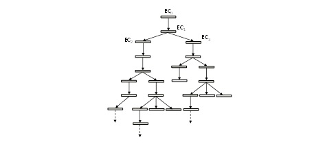

In this section, we will describe the syntax of the main XLIA instructions and we will give an intuition of their symbolic evaluation semantics.
Before that, we will introduce the notions of symbolic evaluation context and symbolic evaluation tree which represent all possible evaluation paths for an instruction.
The behavior of a machine is described thanks to a set of instructions. An evaluation context EC (also called an evaluation environment) contains the information necessary for the symbolic evaluation of these instructions. It is composed of :
A context EC is thus a tuple (CS, VD, BD, PC, ET). In the following, we will sometimes omit some elements of the tuple when they are not useful for the evaluation of current instruction.
For any instruction stm, notation "EC -- stm --> {EC1 EC2 ... ECN}" will mean that stm’s evaluation from context EC resulted in contexts EC1, ..., ECN, representing all possible effects of stm on context EC. It will mean that the evaluation of stm from EC can lead whether to EC1, or to EC2, etc.
The user can decide to put stm in the traces ET1, ..., ETN. When the list of resulting contexts is empty, it means that the evaluation of the instruction has failed; otherwise, it terminates.
A symbolic evaluation tree is a tree built from an initial context EC0 and the evaluation of a "composite instruction", called process.
This tree will be denoted by "(EC0 {(EC1 {(ECa {...}) ... (ECk {...})}) ... (ECN{...})})".
Intuitively, such a tree is built according to the following steps :
The figure below is a graphical representation for the following symbolic evaluation tree: "(EC0 {(EC1 {(EC2 {...}) (EC3 {...})})})".
